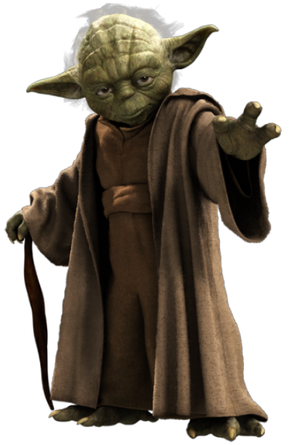

Star Wars (Guerra nas Estrelas) é o título de uma "ópera espacial",
nas próprias palavras do seu autor que assim designou o universo de
fantasia que compunha este projeto, que foi transformada em uma série
de nove filmes de ficção científica. Como subprodutos surgiram também
uma franquia literária, uma série de jogos eletrônicos e desenhos
animados (incluindo a Nova Trilogia, sequências e adaptações
literárias) baseados nas idéias do diretor e roteirista George Lucas.
Os filmes, organizados em duas trilogias, abordam a transição
histórica "numa galáxia muito, muito distante..." onde ocorre a queda
da República Galáctica e a implantação do Império Galáctico sob
comando do senador Palpatine (Lorde Sith).
Filmes
A dúvida sobre a ordem Star Wars sempre existiu, já que os lançamentos
aconteceram fora de ordem cronológica.
Com os novos filmes lançados no cinema nos últimos anos, a dúvida fica
ainda mais intensa. Então, vale a pena saber como eles se encaixam em
tudo o que já foi lançado, né?
Primeiro de tudo, vamos conhecer os nomes de cada um para que você não
se perca entre tantos números. Dos que já foram lançados, temos:
- Star Wars ou Star Wars Episódio IV: Uma Nova Esperança (1977)
- Star Wars Episódio V: O Império Contra Ataca (1980)
- Episódio VI: O Retorno de Jedi (1983)
- Star Wars Episódio I: A Ameaça Fantasma (1999)
- Episódio II: Ataque dos Clones (2002)
- Episódio III: A Vingança dos Sith (2005)
- Episódio VII: O Despertar da Força (2015)
- Rogue One: Uma História Star Wars (2016)
- Star Wars Episódio VIII: Os Últimos Jedi (2017)
- Han Solo: Uma História Star Wars (2018)
- Episódio IX: A Ascensão Skywalker (2019)